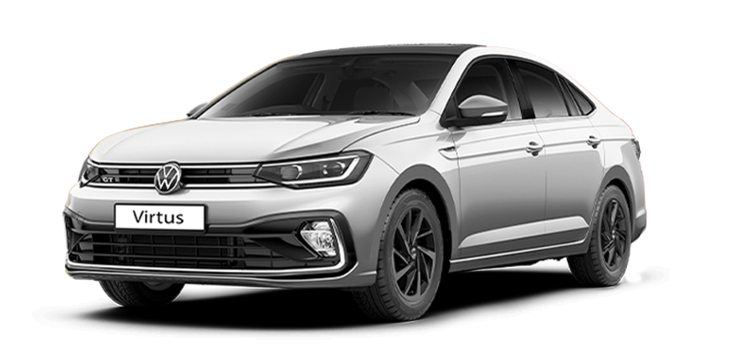
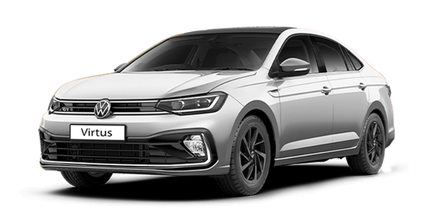

Virtus
Introducing the Virtus GT Plus Sport – a remarkable fusion of power and style. Equipped with a dynamic 1.5L TSI EVO engine and a choice between a 6-speed manual or 7-speed DSG transmission, this sedan invites you to embrace the thrill of the drive. Adorned with refined black & GT accents, the Virtus GT Plus Sport is the perfect companion for those who seek excitement and style on every road.
Taigun
When you’re in a Taigun GT Plus Sport, the open road becomes an invitation to drive and explore. With no set destination, curiosity takes the wheel, leading the journey into the unknown, powered by a revolutionary 1.5 L TSI engine. Each turn unveils new landscapes, hidden gems waiting to be discovered. From quaint roadside diners to serene lakes nestled in the countryside, wonders are experienced with each mile traveled.
Tiguan
For the road not taken. For the road taken twice a day. For the road that should be called a hill. For losing network. For finding yourself. No drive is just another drive when You’re in a Tiguan.